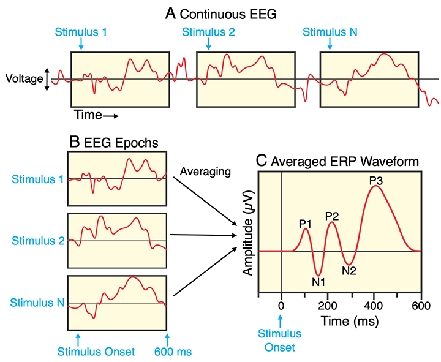
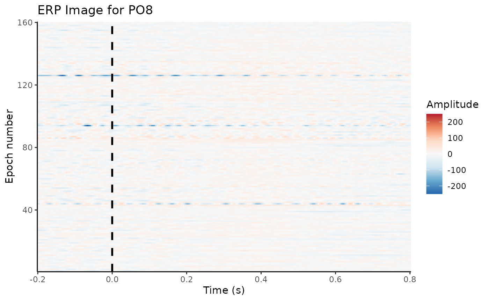
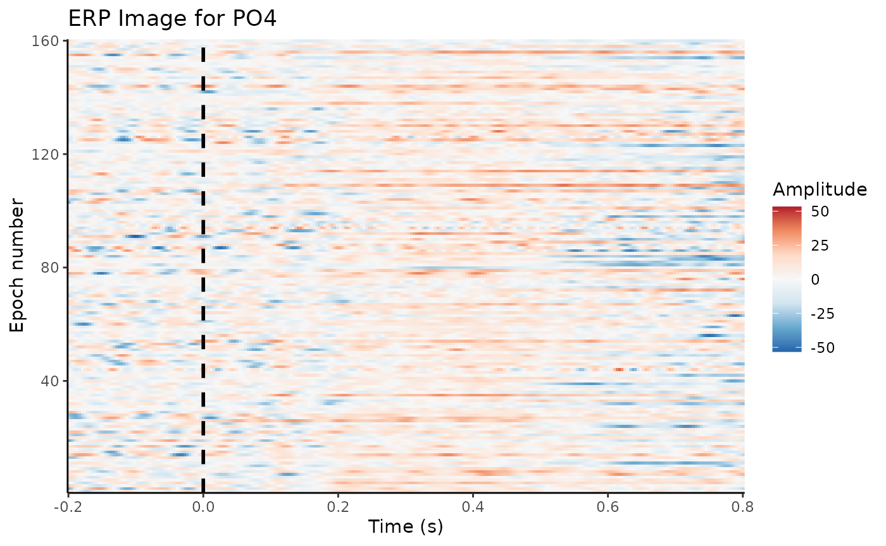

🎯 GOALS
Converting our continuous (preprocessed) EEG data into epochs, that is, short segments around our events of interest (e.g., stimuli or responses).
4.2 Event codes
Significant “events” (e.g., stimuli, responses) are marked in the EEG recording by unique event codes
The meaning of the codes are explained in a specific file in BIDS:
events_file <- here(bids_dir, "task-N170_events.json")
print_file <- function(file) writeLines(readLines(file, warn = FALSE))
print_file(events_file)## {
## "value": {
## "LongName": "Event code value",
## "Levels": {
## "1-40": "Stimulus - faces",
## "41-80": "Stimulus - cars",
## "101-140": "Stimulus - scrambled faces",
## "141-180": "Stimulus - scrambled cars",
##
## "201": "Response - correct",
## "202": "Response - error"
## }
## }
## }- Relevant for the N170 effects: Face stimuli (codes
1to40) vs. car stimuli (codes41to80)
✍️ EXERCISE
Can you come up with a different way to construct the
epoch_labelsvector? Here’s one idea if you get stuck.1
...4.3 Construct epochs
- Knowing the event codes, we can “cut out” our epochs around them

Figure: Extracting epochs from the continuous EEG, time-locked to stimulus onset.2
- Typically including 100 or 200 ms before stimulus onset as a baseline period (see below)
dat_epo <- epoch_data(
dat_preproc,
event_codes,
time_lim = c(-0.2, 0.8),
epoch_labels = epoch_labels
)## Adjusting output limits to match sampling rate.## Output limits: -0.19921875 0.80078125## No baseline removal performed.## Creating 160 epochs.✍️ EXERCISE
Check the
epochsandtimingstables of the new object. Compare them to the ones from the continuous (clean) data.
...-
A useful way to plot epochs is an “ERP image”:
X-axis: Time relative to stimulus onset
Y-axis: Trial number (or any other sorting, e.g., by reaction time)
Colors: EEG amplitude
erp_image(dat_epo, electrode = "PO8", smoothing = 1)
4.4 Baseline correction
Trials will differ in their overall amplitude, e.g., due to drifts and slow artifacts
This can hide more subtle differences between conditions
Solution: Subtract (average) activity during the pre-stimulus baseline
dat_basl <- rm_baseline(dat_epo, c(-0.2, 0.0))## Baseline: -0.2 sBaseline: 0 s
erp_image(dat_basl, electrode = "PO4", smoothing = 1)
✍️ EXERCISE
Confirm that the average voltage during the baseline window is actually zero for a single epoch and channel. One approach to do this: Take the baselined epochs and (1) get the relevant indices from the
timingstable (one epoch, all baseline time points), (2) Extract one channel (column) from thesignalstable and index it by the index vector, and (3) compute the mean over these signals.
basl_ixs <- dat_basl$timings$epoch == 42 & dat_basl$timings$time < 0.0
basl_signals <- ...
...(basl_signals)- Save the baseline-corrected epochs so we can re-use them in the next notebook: